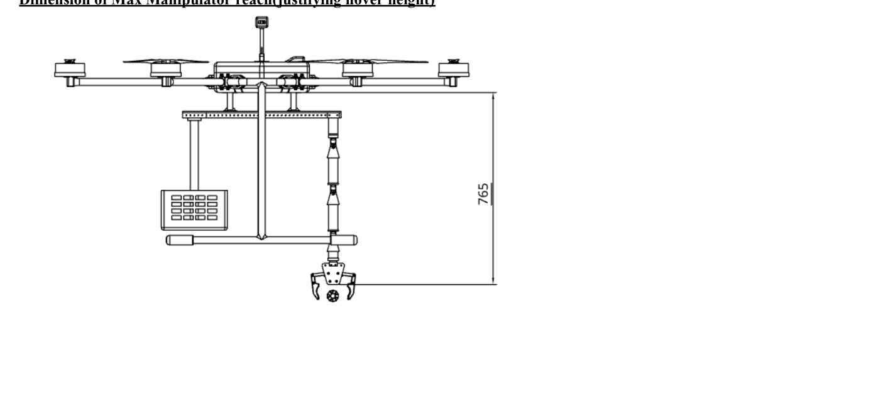
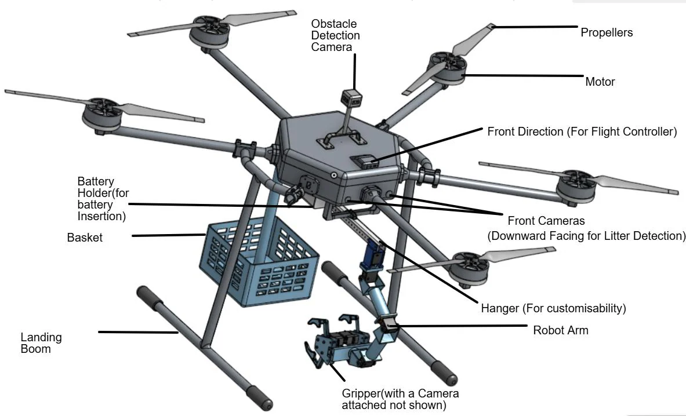
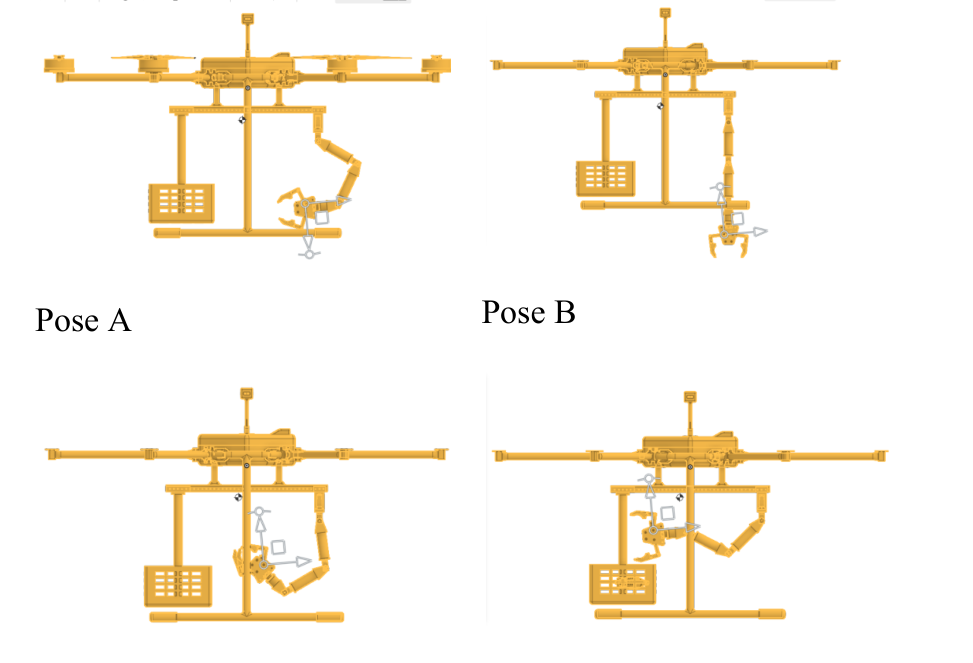
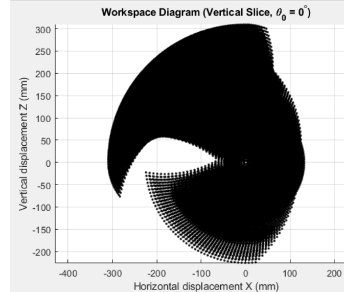

Aerial robotics · Individual design work
Multirotor UAV with manipulator
My design work on a hexacopter with a robotic arm for collecting rubbish from waterways.

The idea
We wanted to design a UAV that could pick up small pieces of rubbish from rivers using a robotic arm, while keeping the total mass below 25 kg.
What I worked on
- Designed the UAV layout, manipulator and gripper in CAD.
- Checked the mass, centre of gravity and clearances as the arm moved between positions.
- Calculated the torque needed to grip a 0.2 kg object and compared it with the selected servo.


The design checks
I used the CAD model to check the estimated mass, then looked at how the centre of gravity changed when the arm moved. I also calculated the arm's reachable workspace and checked the torque needed at the gripper. These were important because the arm had to reach the rubbish without interfering with the UAV itself.


The main challenge
Designing the arm wasn't just about making it reach far enough. Moving the arm also changes the UAV's mass distribution, which could affect its balance. That meant I had to consider the aircraft and the manipulator together.